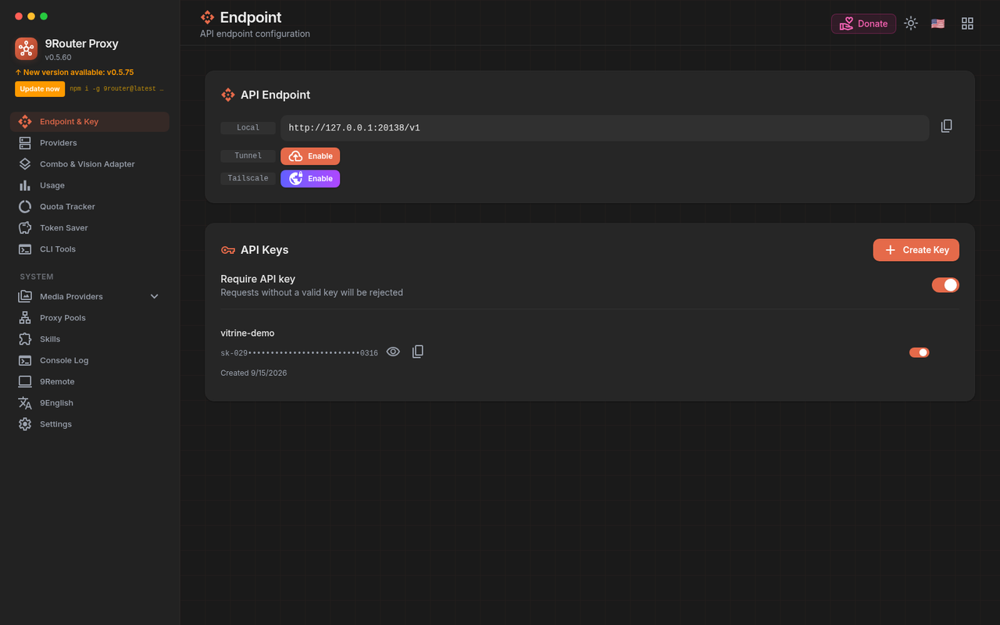
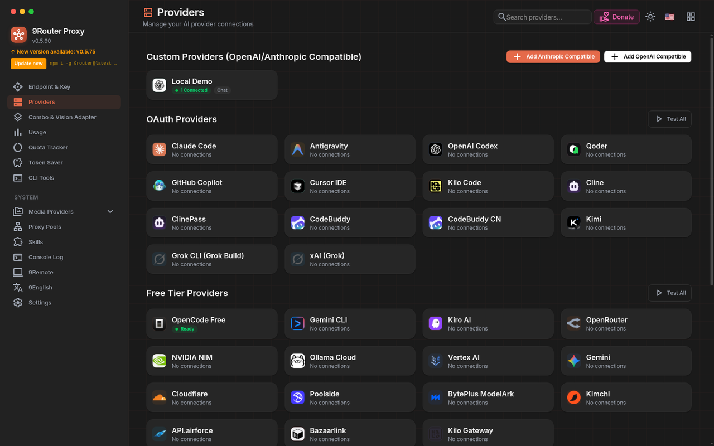
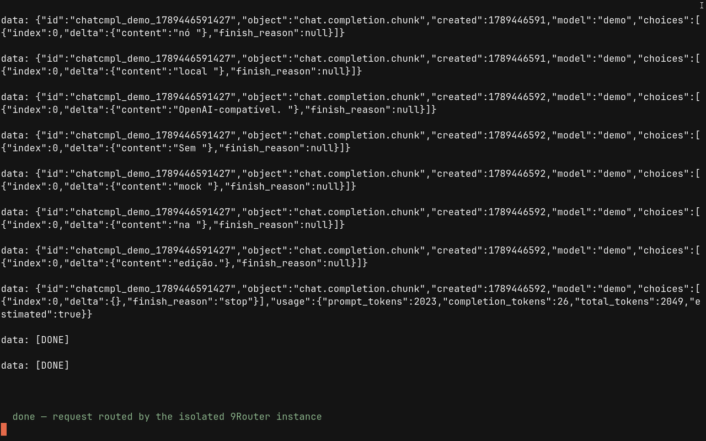
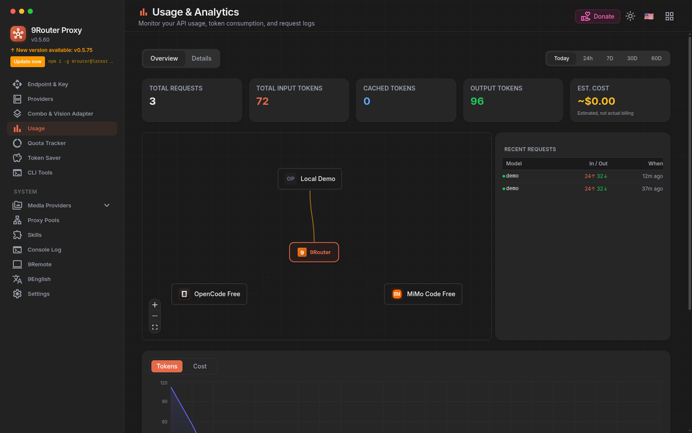
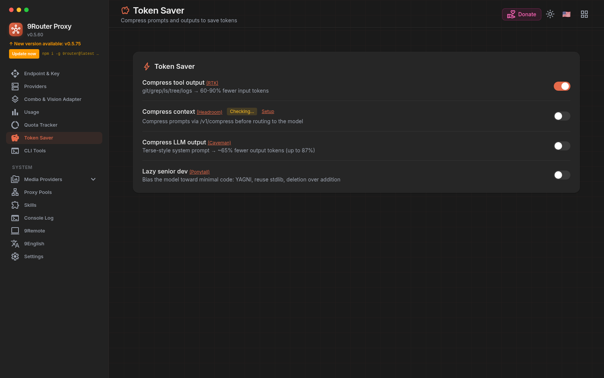
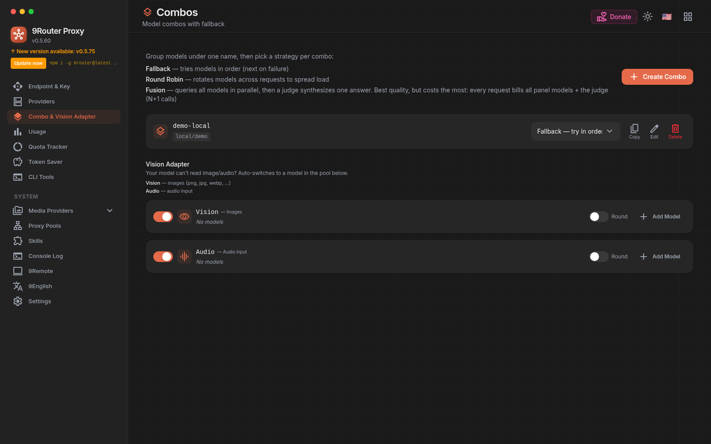
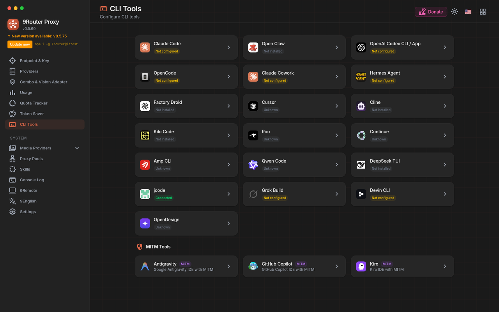

Gateway local · OpenAI-compatible · v0.5.60
Claude Code, Codex, Cursor, Cline. Todos falam com /v1 na sua máquina. O 9Router escolhe o provider, traduz o formato e troca de conta quando a cota acaba.
Narração: Lucas Oliveira, OFICIAL #1 (OmniVoice, 15/09/2026). Gravação do dashboard e de um POST real numa instância isolada, porta 20138. Sem UI inventada.
O CLI aponta para localhost:20128/v1. Chat, fallback e chave ficam no gateway, não espalhados em cada ferramenta.
Uma fila de modelos. Acabou a cota, o próximo pega. Sem você trocar de endpoint no meio da sessão.
Comprime tool_result (git diff, grep, ls) antes do prompt. Fail-open: se der erro, o body segue intacto.
Instala, conecta um provider, cola o endpoint no CLI. O pedido entra OpenAI-compatible e sai no formato que o upstream pede.
npm i -g 9router e 9router. Dashboard em localhost:20128.
OAuth, API key ou um nó OpenAI-compatible. O catálogo está na tela Providers.
Claude Code, Codex, Cursor, Cline: base URL http://localhost:20128/v1.
Se o primeiro modelo recusar, o próximo da lista entra. Usage registra o que passou.
Capturas de 15/09/2026, instância isolada em 127.0.0.1:20138. Tema dark do próprio app. Nada de mockup.
O endereço local e a API key que o CLI vai usar. Nesta gravação: http://127.0.0.1:20138/v1 e a chave vitrine-demo.

OAuth, free tier, API key e nós OpenAI-compatible. Nesta instância o nó Local Demo está com 1 conexão testada; o resto do catálogo aparece sem conta, como um install novo.
open-sse/providers/registry/ (contagem em 15/09/2026, sem o index)
Não é tela fingida. curl no /v1/chat/completions, model local/demo, stream SSE. O gateway roteou para um nó OpenAI-compatible local. A resposta volta em chunks.

O mesmo pedido aparece no dashboard: modelo demo, 24↑ 32↓ por chamada, grafo com o nó Local Demo ligado ao 9Router.

Liga a compressão de output de ferramenta. A UI do app ainda escreve “60-90% fewer input tokens”. A medição desta vitrine, no próprio repositório, deu outra faixa. Os dois ficam abaixo, com fonte.

Um nome, uma fila. Fallback tenta na ordem. Round robin espalha. Fusion dispara em paralelo (e cobra todos). Nesta demo: combo demo-local com local/demo.

Presets de endpoint por ferramenta. Nesta captura a página lista 16 ferramentas e 3 pontes MITM (Antigravity, GitHub Copilot, Kiro). jcode aparece Connected nesta máquina; o resto é o estado real do install de demo.

Sem “60+ providers” inflado. O que cabe numa frase e dá para conferir no repo ou no log da demo.
9router 0.5.60, porta padrão 20128.RTK, casos de 15/09/2026 neste worktree: git show HEAD 7,7%; git show HEAD~5 27%; git diff HEAD~10 HEAD -- CHANGELOG.md 18,5%; git log -p -n 3 -- open-sse/rtk/ 70,3%. O README afirma “save 20-40% tokens with RTK”; isso é a faixa documentada pelo projeto, não a medição desta página. A UI do Token Saver ainda mostra “60-90%”; não repetimos esse número aqui.
Não é o site de marketing. É o recorte honesto contra um gateway hospedado, um proxy Python e o CLI falando direto com um provider.
| 9Router | OpenRouter | LiteLLM Proxy | CLI direto | |
|---|---|---|---|---|
| Onde roda | Na sua máquina (npm / source). Dashboard local. | Hospedado. Não é self-host. | Self-host (Python / Docker), porta 4000 no doc oficial. | Cada ferramenta no provider dela. |
| API | OpenAI-compatible /v1, porta 20128. |
OpenAI-compatible hospedada. | OpenAI-compatible no proxy. | Formato de cada vendor. |
| Fallback | Combo por modelo, várias contas, quota no dashboard. | Routing e fallback no serviço deles. | Config de fallback no proxy. | Você troca na mão. |
| Providers | 122 módulos neste tree (15/09/2026). README: 40+. | “400+ models / 70+ providers” no blog deles, jun/2026. | Docs falam em 100+ providers. | Um por ferramenta. |
| Token saver de tool_result | RTK no caminho, fail-open. | Não é o produto. | Não é o produto. | Não. |
| CLI / IDE | Página de presets. 16 tools + 3 MITM nesta captura. | Qualquer cliente OpenAI. | Qualquer cliente OpenAI. | Nativo, um vendor. |
| Custo da camada | Software MIT, sem markup. Você paga o upstream. | Pay-as-you-go; 5,5% em créditos no blog de jun/2026. | Open source; infra é sua. | Só o provider. |
Fontes datadas:
9Router, este repositório e capturas em 15/09/2026 (README, CHANGELOG, open-sse/providers/registry);
OpenRouter, artigo “LLM Gateway: What It Is and How to Choose One”, 11/06/2026, openrouter.ai/blog/insights/llm-gateway;
LiteLLM, docs de endpoint OpenAI-compatible (página vista em 14/09/2026).
Se o número do concorrente mudou, o link é o da data.
O caminho de produto é o pacote npm. Este repositório (9router-app) é o dashboard + gateway; o launcher publicado é o pacote 9router.
# instala o launcher npm install -g 9router 9router # dashboard: http://localhost:20128 # API: http://localhost:20128/v1
# o package da raiz é privado
cp .env.example .env
npm install
PORT=20128 NEXT_PUBLIC_BASE_URL=http://localhost:20128 npm run dev
Depois: Dashboard → Providers → conecta um provider. No CLI, cola http://localhost:20128/v1 e a chave da tela Endpoint. Senha inicial: variável INITIAL_PASSWORD (não deixe 123456 se a instância sair do localhost). Esta página não aponta para GitHub Releases; o install é npm.